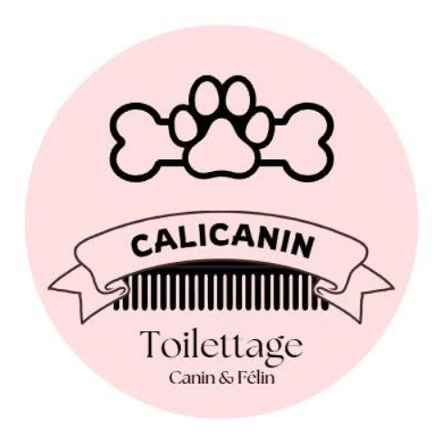
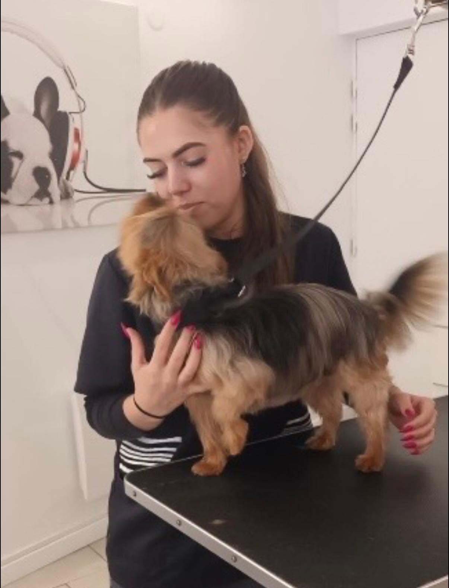

Alizé Toilettage Chiens et Chats
Toilettage pour chiens, chats et NAC à Loos
Petits ou grands, poilus ou moins poilus: chaque loulou a son soin adapté
Prendre rendez-vousBienvenue
Murielle et Wendy vous accueillent dans leur salon à Loos pour chouchouter vos amis les plus fidèles: chiens, chats et NAC. À bientôt et au plaisir de partager ce moment avec vos loulous.
Notre Histoire
Alizé Toilettage Chiens et Chats est une adresse de confiance à Loos, reconnue pour son accueil, sa douceur et son attention au bien-être animal.
Pendant des années, Murielle et Wendy ont pris soin ensemble des animaux avec patience, professionnalisme et passion.
À partir de septembre, Murielle prendra sa retraite et Wendy poursuivra l'aventure pour continuer à offrir la même qualité de soin et la même bienveillance à chaque compagnon.

« Qu'ils soient petits ou grands, poilus ou moins poilus, nous les accueillons avec douceur et patience. »